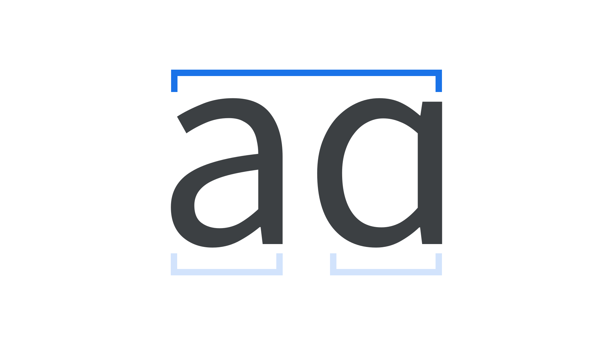

Character
By Google Fonts Knowledge contributors · Google Fonts Knowledge.
Original article · Source on GitHub · CC BY-SA 4.0. Text, illustrations and existing credits reproduced from the licensed Knowledge repository. Open Shelf adapted the layout and links; these adaptations are also CC BY-SA 4.0. No endorsement implied.
A character is a single unit of language, such as a letter or punctuation mark. The term is closely related to—but not the same as—a glyph.
Every font has a Unicode character map that links (abstract) character IDs with how to display that character, using the default glyphs.

While the two terms are sometimes interchangeable when talking about type, a single character can have multiple glyphs (see alternates), and a single glyph can represent multiple characters (see ligatures).
And, even for scenarios where a single character relates to a single glyph, it’s important to note that the character is the abstract concept; the glyph is what we use.